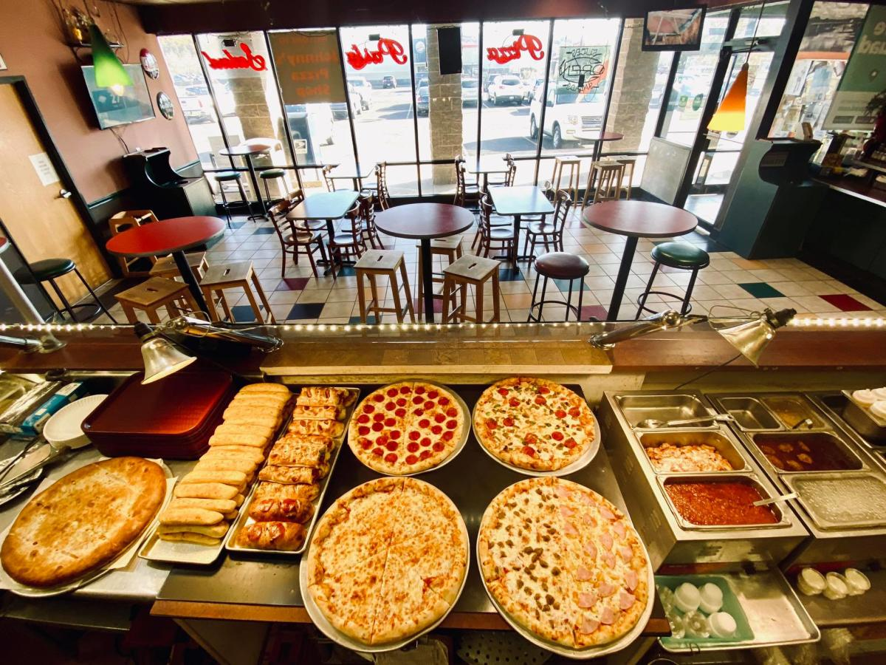

Welcome to our Pizza Shop! We are passionate about creating delicious and authentic pizzas that will satisfy your cravings. Our mission is to provide high-quality ingredients, exceptional customer service, and a memorable dining experience for pizza lovers of all ages
Explore our menu featuring a variety of mouth-watering pizzas, from classic Margherita to specialty pizzas loaded with fresh toppings. Whether you prefer a thin crust, deep dish, or gluten-free option, we have something for everyone. Don't forget to check out our appetizers, salads, and desserts to complete your meal.
Can't make it to our shop? No problem! We offer convenient delivery services to bring our delectable pizzas right to your doorstep. You can also place an order for takeout and enjoy our pizzas in the comfort of your own home. Just give us a call or order online to satisfy your pizza cravings.
A pizza website pizzorino ,is a website that is dedicated to all things related to pizza. It typically includes information about different types of pizzas, recipes for making pizza at home, reviews of pizzerias, articles about pizza culture and history, and possibly a platform for ordering pizza online. These websites often feature images of delicious pizzas, tips for making the perfect pizza, and sometimes even videos showing pizza-making techniques. Overall, a pizza website is a hub for pizza lovers to explore, learn, and indulge in their love for this popular dish.